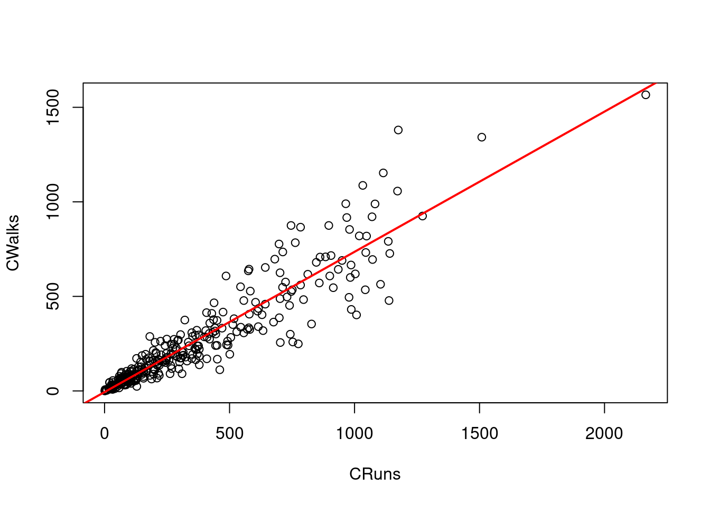
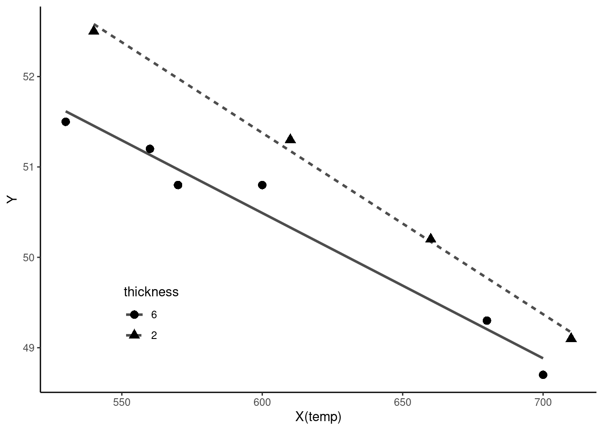

dat1 <- read.csv("data/ch2_reg1.csv")2장 회귀분석
(예 2.3 - 2.5, 2.7, 2.10 - 2.11)
데이터 로드
(예 2.3) 회귀계수 추정
lm_fit <- lm(weight ~ age + height, data = dat1)
coef(lm_fit) (Intercept) age height
-108.1671993 0.3291212 0.9552913 (예 2.4) 오차항 분산 추정
sum(lm_fit$residuals^2) / lm_fit$df.residual[1] 7.038464(예 2.5) 회귀성검정
anova(lm_fit)Analysis of Variance Table
Response: weight
Df Sum Sq Mean Sq F value Pr(>F)
age 1 119.299 119.299 16.95 0.004476 **
height 1 107.831 107.831 15.32 0.005793 **
Residuals 7 49.269 7.038
---
Signif. codes: 0 '***' 0.001 '**' 0.01 '*' 0.05 '.' 0.1 ' ' 1(예 2.7) 회귀계수검정
summary(lm_fit)
Call:
lm(formula = weight ~ age + height, data = dat1)
Residuals:
Min 1Q Median 3Q Max
-3.3398 -1.6623 -0.3084 1.3727 4.1911
Coefficients:
Estimate Std. Error t value Pr(>|t|)
(Intercept) -108.16720 42.12277 -2.568 0.03712 *
age 0.32912 0.06924 4.753 0.00208 **
height 0.95529 0.24406 3.914 0.00579 **
---
Signif. codes: 0 '***' 0.001 '**' 0.01 '*' 0.05 '.' 0.1 ' ' 1
Residual standard error: 2.653 on 7 degrees of freedom
Multiple R-squared: 0.8217, Adjusted R-squared: 0.7708
F-statistic: 16.13 on 2 and 7 DF, p-value: 0.002391(예 2.10) 평균반응치 추정
추정회귀계수벡터의 분산-공분산 행렬
vcov(lm_fit) (Intercept) age height
(Intercept) 1774.3280624 -0.671107283 -10.264885141
age -0.6711073 0.004794717 0.003035476
height -10.2648851 0.003035476 0.059566804신규 데이터
newdata <- data.frame(age = 40, height = 170)신규 데이터에 대한 평균반응치 추정
predict(lm_fit, newdata) 1
67.39718 신규 데이터에 대한 평균반응치의 95% 신뢰구간
conf_interval <- predict(lm_fit, newdata, interval = "confidence", level = 0.95)
conf_interval[, c("lwr", "upr")] lwr upr
65.01701 69.77735 (예 2.11) 미래반응치 예측
신규 데이터에 대한 미래반응치의 95% 예측구간
pred_interval <- predict(lm_fit, newdata, interval = "prediction", level = 0.95)
pred_interval[, c("lwr", "upr")] lwr upr
60.68745 74.10690 (예 2.8 - 2.9, 2.13)
패키지 로드
library("olsrr")
Attaching package: 'olsrr'The following object is masked from 'package:datasets':
riverslibrary("car")Loading required package: carData데이터 로드
dat_ba <- read.csv("data/Player.csv")다중 회귀모형 추정
lm_model <- lm(Salary ~ Hits + Walks + CRuns + HmRun + CWalks, data = dat_ba)
summary(lm_model)
Call:
lm(formula = Salary ~ Hits + Walks + CRuns + HmRun + CWalks,
data = dat_ba)
Residuals:
Min 1Q Median 3Q Max
-858.19 -184.25 -40.46 120.95 2183.89
Coefficients:
Estimate Std. Error t value Pr(>|t|)
(Intercept) -61.7447 57.0968 -1.081 0.28053
Hits 1.3558 0.7568 1.791 0.07441 .
Walks 4.9172 1.5771 3.118 0.00203 **
CRuns 1.0212 0.2123 4.810 2.58e-06 ***
HmRun 2.5378 2.9132 0.871 0.38450
CWalks -0.5726 0.2821 -2.030 0.04342 *
---
Signif. codes: 0 '***' 0.001 '**' 0.01 '*' 0.05 '.' 0.1 ' ' 1
Residual standard error: 341.1 on 257 degrees of freedom
(59 observations deleted due to missingness)
Multiple R-squared: 0.4391, Adjusted R-squared: 0.4282
F-statistic: 40.24 on 5 and 257 DF, p-value: < 2.2e-16(예 2.8) 모든 가능한 조합의 회귀분석
k <- ols_step_all_possible(lm_model)
k Index N Predictors R-Square Adj. R-Square Mallow's Cp
3 1 1 CRuns 0.3166062 0.3139878 54.140213
5 2 1 CWalks 0.2399256 0.2370135 89.276284
2 3 1 Walks 0.1970181 0.1939416 108.937069
1 4 1 Hits 0.1924355 0.1893414 111.036886
4 5 1 HmRun 0.1176683 0.1142877 145.296250
7 6 2 Hits CRuns 0.4147791 0.4102774 11.156078
10 7 2 Walks CRuns 0.3906078 0.3859201 22.231709
9 8 2 Hits CWalks 0.3853422 0.3806140 24.644480
13 9 2 CRuns HmRun 0.3584707 0.3535358 36.957357
14 10 2 CRuns CWalks 0.3240582 0.3188586 52.725631
12 11 2 Walks CWalks 0.3068498 0.3015179 60.610716
15 12 2 HmRun CWalks 0.2965559 0.2911448 65.327521
6 13 2 Hits Walks 0.2453786 0.2395738 88.777655
11 14 2 Walks HmRun 0.2240202 0.2180511 98.564374
8 15 2 Hits HmRun 0.2093560 0.2032741 105.283718
16 16 3 Hits Walks CRuns 0.4287269 0.4221098 6.765004
23 17 3 Walks CRuns CWalks 0.4269906 0.4203535 7.560585
19 18 3 Hits CRuns HmRun 0.4178491 0.4111061 11.749353
20 19 3 Hits CRuns CWalks 0.4147802 0.4080016 13.155578
22 20 3 Walks CRuns HmRun 0.4021021 0.3951766 18.964848
21 21 3 Hits HmRun CWalks 0.3874947 0.3804000 25.658175
18 22 3 Hits Walks CWalks 0.3868621 0.3797601 25.948023
25 23 3 CRuns HmRun CWalks 0.3647553 0.3573973 36.077637
24 24 3 Walks HmRun CWalks 0.3290179 0.3212459 52.452998
17 25 3 Hits Walks HmRun 0.2532017 0.2445515 87.193024
27 26 4 Hits Walks CRuns CWalks 0.4374699 0.4287485 4.758862
30 27 4 Walks CRuns HmRun CWalks 0.4321227 0.4233184 7.209002
26 28 4 Hits Walks CRuns HmRun 0.4301353 0.4213001 8.119679
29 29 4 Hits CRuns HmRun CWalks 0.4179107 0.4088860 13.721142
28 30 4 Hits Walks HmRun CWalks 0.3886385 0.3791600 27.134046
31 31 5 Hits Walks CRuns HmRun CWalks 0.4391260 0.4282141 6.000000(예 2.9) 단계별방법
ols_step_both_p(lm_model, details = TRUE, pent = 0.3, prem = 0.3)Stepwise Selection Method
---------------------------
Candidate Terms:
1. Hits
2. Walks
3. CRuns
4. HmRun
5. CWalks
We are selecting variables based on p value...
Stepwise Selection: Step 1
- CRuns added
Model Summary
------------------------------------------------------------------
R 0.563 RMSE 373.643
R-Squared 0.317 Coef. Var 69.719
Adj. R-Squared 0.314 MSE 139609.007
Pred R-Squared 0.295 MAE 260.516
------------------------------------------------------------------
RMSE: Root Mean Square Error
MSE: Mean Square Error
MAE: Mean Absolute Error
ANOVA
---------------------------------------------------------------------------
Sum of
Squares DF Mean Square F Sig.
---------------------------------------------------------------------------
Regression 16881162.032 1 16881162.032 120.917 0.0000
Residual 36437950.757 261 139609.007
Total 53319112.789 262
---------------------------------------------------------------------------
Parameter Estimates
-------------------------------------------------------------------------------------------
model Beta Std. Error Std. Beta t Sig lower upper
-------------------------------------------------------------------------------------------
(Intercept) 259.082 34.127 7.592 0.000 191.882 326.282
CRuns 0.766 0.070 0.563 10.996 0.000 0.629 0.904
-------------------------------------------------------------------------------------------
Stepwise Selection: Step 2
- Hits added
Model Summary
------------------------------------------------------------------
R 0.644 RMSE 346.429
R-Squared 0.415 Coef. Var 64.641
Adj. R-Squared 0.410 MSE 120013.306
Pred R-Squared 0.389 MAE 230.183
------------------------------------------------------------------
RMSE: Root Mean Square Error
MSE: Mean Square Error
MAE: Mean Absolute Error
ANOVA
--------------------------------------------------------------------------
Sum of
Squares DF Mean Square F Sig.
--------------------------------------------------------------------------
Regression 22115653.209 2 11057826.604 92.138 0.0000
Residual 31203459.580 260 120013.306
Total 53319112.789 262
--------------------------------------------------------------------------
Parameter Estimates
-------------------------------------------------------------------------------------------
model Beta Std. Error Std. Beta t Sig lower upper
-------------------------------------------------------------------------------------------
(Intercept) -50.817 56.596 -0.898 0.370 -162.262 60.627
CRuns 0.661 0.067 0.486 9.939 0.000 0.530 0.792
Hits 3.226 0.488 0.323 6.604 0.000 2.264 4.188
-------------------------------------------------------------------------------------------
Model Summary
------------------------------------------------------------------
R 0.644 RMSE 346.429
R-Squared 0.415 Coef. Var 64.641
Adj. R-Squared 0.410 MSE 120013.306
Pred R-Squared 0.389 MAE 230.183
------------------------------------------------------------------
RMSE: Root Mean Square Error
MSE: Mean Square Error
MAE: Mean Absolute Error
ANOVA
--------------------------------------------------------------------------
Sum of
Squares DF Mean Square F Sig.
--------------------------------------------------------------------------
Regression 22115653.209 2 11057826.604 92.138 0.0000
Residual 31203459.580 260 120013.306
Total 53319112.789 262
--------------------------------------------------------------------------
Parameter Estimates
-------------------------------------------------------------------------------------------
model Beta Std. Error Std. Beta t Sig lower upper
-------------------------------------------------------------------------------------------
(Intercept) -50.817 56.596 -0.898 0.370 -162.262 60.627
CRuns 0.661 0.067 0.486 9.939 0.000 0.530 0.792
Hits 3.226 0.488 0.323 6.604 0.000 2.264 4.188
-------------------------------------------------------------------------------------------
Stepwise Selection: Step 3
- Walks added
Model Summary
------------------------------------------------------------------
R 0.655 RMSE 342.936
R-Squared 0.429 Coef. Var 63.990
Adj. R-Squared 0.422 MSE 117605.308
Pred R-Squared 0.398 MAE 230.113
------------------------------------------------------------------
RMSE: Root Mean Square Error
MSE: Mean Square Error
MAE: Mean Absolute Error
ANOVA
-------------------------------------------------------------------------
Sum of
Squares DF Mean Square F Sig.
-------------------------------------------------------------------------
Regression 22859338.083 3 7619779.361 64.791 0.0000
Residual 30459774.706 259 117605.308
Total 53319112.789 262
-------------------------------------------------------------------------
Parameter Estimates
-------------------------------------------------------------------------------------------
model Beta Std. Error Std. Beta t Sig lower upper
-------------------------------------------------------------------------------------------
(Intercept) -76.854 56.974 -1.349 0.179 -189.045 35.337
CRuns 0.620 0.068 0.455 9.117 0.000 0.486 0.753
Hits 2.415 0.581 0.242 4.157 0.000 1.271 3.560
Walks 3.126 1.243 0.151 2.515 0.013 0.678 5.575
-------------------------------------------------------------------------------------------
Model Summary
------------------------------------------------------------------
R 0.655 RMSE 342.936
R-Squared 0.429 Coef. Var 63.990
Adj. R-Squared 0.422 MSE 117605.308
Pred R-Squared 0.398 MAE 230.113
------------------------------------------------------------------
RMSE: Root Mean Square Error
MSE: Mean Square Error
MAE: Mean Absolute Error
ANOVA
-------------------------------------------------------------------------
Sum of
Squares DF Mean Square F Sig.
-------------------------------------------------------------------------
Regression 22859338.083 3 7619779.361 64.791 0.0000
Residual 30459774.706 259 117605.308
Total 53319112.789 262
-------------------------------------------------------------------------
Parameter Estimates
-------------------------------------------------------------------------------------------
model Beta Std. Error Std. Beta t Sig lower upper
-------------------------------------------------------------------------------------------
(Intercept) -76.854 56.974 -1.349 0.179 -189.045 35.337
CRuns 0.620 0.068 0.455 9.117 0.000 0.486 0.753
Hits 2.415 0.581 0.242 4.157 0.000 1.271 3.560
Walks 3.126 1.243 0.151 2.515 0.013 0.678 5.575
-------------------------------------------------------------------------------------------
Stepwise Selection: Step 4
- CWalks added
Model Summary
------------------------------------------------------------------
R 0.661 RMSE 340.961
R-Squared 0.437 Coef. Var 63.621
Adj. R-Squared 0.429 MSE 116254.294
Pred R-Squared 0.402 MAE 229.259
------------------------------------------------------------------
RMSE: Root Mean Square Error
MSE: Mean Square Error
MAE: Mean Absolute Error
ANOVA
-------------------------------------------------------------------------
Sum of
Squares DF Mean Square F Sig.
-------------------------------------------------------------------------
Regression 23325504.960 4 5831376.240 50.161 0.0000
Residual 29993607.829 258 116254.294
Total 53319112.789 262
-------------------------------------------------------------------------
Parameter Estimates
-------------------------------------------------------------------------------------------
model Beta Std. Error Std. Beta t Sig lower upper
-------------------------------------------------------------------------------------------
(Intercept) -63.651 57.028 -1.116 0.265 -175.951 48.649
CRuns 1.022 0.212 0.751 4.818 0.000 0.604 1.440
Hits 1.569 0.716 0.157 2.192 0.029 0.160 2.979
Walks 5.058 1.568 0.244 3.226 0.001 1.971 8.146
CWalks -0.564 0.282 -0.330 -2.002 0.046 -1.119 -0.009
-------------------------------------------------------------------------------------------
Model Summary
------------------------------------------------------------------
R 0.661 RMSE 340.961
R-Squared 0.437 Coef. Var 63.621
Adj. R-Squared 0.429 MSE 116254.294
Pred R-Squared 0.402 MAE 229.259
------------------------------------------------------------------
RMSE: Root Mean Square Error
MSE: Mean Square Error
MAE: Mean Absolute Error
ANOVA
-------------------------------------------------------------------------
Sum of
Squares DF Mean Square F Sig.
-------------------------------------------------------------------------
Regression 23325504.960 4 5831376.240 50.161 0.0000
Residual 29993607.829 258 116254.294
Total 53319112.789 262
-------------------------------------------------------------------------
Parameter Estimates
-------------------------------------------------------------------------------------------
model Beta Std. Error Std. Beta t Sig lower upper
-------------------------------------------------------------------------------------------
(Intercept) -63.651 57.028 -1.116 0.265 -175.951 48.649
CRuns 1.022 0.212 0.751 4.818 0.000 0.604 1.440
Hits 1.569 0.716 0.157 2.192 0.029 0.160 2.979
Walks 5.058 1.568 0.244 3.226 0.001 1.971 8.146
CWalks -0.564 0.282 -0.330 -2.002 0.046 -1.119 -0.009
-------------------------------------------------------------------------------------------
No more variables to be added/removed.
Final Model Output
------------------
Model Summary
------------------------------------------------------------------
R 0.661 RMSE 340.961
R-Squared 0.437 Coef. Var 63.621
Adj. R-Squared 0.429 MSE 116254.294
Pred R-Squared 0.402 MAE 229.259
------------------------------------------------------------------
RMSE: Root Mean Square Error
MSE: Mean Square Error
MAE: Mean Absolute Error
ANOVA
-------------------------------------------------------------------------
Sum of
Squares DF Mean Square F Sig.
-------------------------------------------------------------------------
Regression 23325504.960 4 5831376.240 50.161 0.0000
Residual 29993607.829 258 116254.294
Total 53319112.789 262
-------------------------------------------------------------------------
Parameter Estimates
-------------------------------------------------------------------------------------------
model Beta Std. Error Std. Beta t Sig lower upper
-------------------------------------------------------------------------------------------
(Intercept) -63.651 57.028 -1.116 0.265 -175.951 48.649
CRuns 1.022 0.212 0.751 4.818 0.000 0.604 1.440
Hits 1.569 0.716 0.157 2.192 0.029 0.160 2.979
Walks 5.058 1.568 0.244 3.226 0.001 1.971 8.146
CWalks -0.564 0.282 -0.330 -2.002 0.046 -1.119 -0.009
-------------------------------------------------------------------------------------------
Stepwise Selection Summary
----------------------------------------------------------------------------------------
Added/ Adj.
Step Variable Removed R-Square R-Square C(p) AIC RMSE
----------------------------------------------------------------------------------------
1 CRuns addition 0.317 0.314 54.1400 3866.0101 373.6429
2 Hits addition 0.415 0.410 11.1560 3827.2236 346.4294
3 Walks addition 0.429 0.422 6.7650 3822.8795 342.9363
4 CWalks addition 0.437 0.429 4.7590 3820.8233 340.9608
----------------------------------------------------------------------------------------(예 2.13) 다중공선성
분산팽창계수
vif_value1 <- vif(lm_model)
vif_value1 Hits Walks CRuns HmRun CWalks
2.626281 2.641472 11.132539 1.465358 12.496169 변수간 상관계수
vars1 <- c("Hits", "Walks", "CRuns", "HmRun", "CWalks")
cor(dat_ba[vars1]) Hits Walks CRuns HmRun CWalks
Hits 1.0000000 0.6412106 0.2617869 0.5621579 0.1518182
Walks 0.6412106 1.0000000 0.3384780 0.4810143 0.4245071
CRuns 0.2617869 0.3384780 1.0000000 0.2623606 0.9278069
HmRun 0.5621579 0.4810143 0.2623606 1.0000000 0.2331537
CWalks 0.1518182 0.4245071 0.9278069 0.2331537 1.0000000상관계수가 높은 두 변수 간의 선형관계
plot(dat_ba[, c("CRuns", "CWalks")])
abline(lm(CWalks ~ CRuns, data = dat_ba), col = "red", lwd = 2, lty = 1)
상관계수가 높은 두 변수 중 하나의 변수를 제거
lm2_model <- lm(Salary ~ Hits + Walks + CRuns + HmRun, data = dat_ba)
summary(lm2_model)
Call:
lm(formula = Salary ~ Hits + Walks + CRuns + HmRun, data = dat_ba)
Residuals:
Min 1Q Median 3Q Max
-902.84 -189.20 -37.78 104.27 2196.70
Coefficients:
Estimate Std. Error t value Pr(>|t|)
(Intercept) -75.27564 57.04814 -1.320 0.188168
Hits 2.23021 0.62602 3.563 0.000437 ***
Walks 2.97024 1.25939 2.358 0.019096 *
CRuns 0.61299 0.06849 8.950 < 2e-16 ***
HmRun 2.33890 2.92909 0.799 0.425310
---
Signif. codes: 0 '***' 0.001 '**' 0.01 '*' 0.05 '.' 0.1 ' ' 1
Residual standard error: 343.2 on 258 degrees of freedom
(59 observations deleted due to missingness)
Multiple R-squared: 0.4301, Adjusted R-squared: 0.4213
F-statistic: 48.68 on 4 and 258 DF, p-value: < 2.2e-16vif_value2 <- vif(lm2_model)
vif_value2 Hits Walks CRuns HmRun
1.775329 1.664286 1.144697 1.463700 (예 2.14, 2.16)
패키지 로드
library(ggplot2)데이터 로드
dat1 <- read.csv("data/ch2_coil.csv")
summary(dat1) temp thick y
Min. :530.0 Min. :2.0 Min. :48.70
1st Qu.:562.5 1st Qu.:2.0 1st Qu.:49.52
Median :605.0 Median :6.0 Median :50.80
Mean :616.0 Mean :4.4 Mean :50.54
3rd Qu.:675.0 3rd Qu.:6.0 3rd Qu.:51.27
Max. :710.0 Max. :6.0 Max. :52.50 지시변수 변환
dat1$thick <- factor(dat1$thick, levels = c(6, 2))
summary(dat1) temp thick y
Min. :530.0 6:6 Min. :48.70
1st Qu.:562.5 2:4 1st Qu.:49.52
Median :605.0 Median :50.80
Mean :616.0 Mean :50.54
3rd Qu.:675.0 3rd Qu.:51.27
Max. :710.0 Max. :52.50 (예 2.14) 회귀모형 추정
lm_fit <- lm(y ~ temp + thick, data = dat1)
summary(lm_fit)
Call:
lm(formula = y ~ temp + thick, data = dat1)
Residuals:
Min 1Q Median 3Q Max
-0.26076 -0.18481 -0.02085 0.16208 0.29881
Coefficients:
Estimate Std. Error t value Pr(>|t|)
(Intercept) 61.107966 0.703491 86.864 7.06e-12 ***
temp -0.017678 0.001149 -15.380 1.18e-06 ***
thick2 0.804153 0.149570 5.376 0.00103 **
---
Signif. codes: 0 '***' 0.001 '**' 0.01 '*' 0.05 '.' 0.1 ' ' 1
Residual standard error: 0.228 on 7 degrees of freedom
Multiple R-squared: 0.9721, Adjusted R-squared: 0.9641
F-statistic: 121.8 on 2 and 7 DF, p-value: 3.641e-06(예 2.16) 교호작용 추정
lm_fit_interaction <- lm(y ~ temp + thick + temp:thick, data = dat1)
summary(lm_fit_interaction)
Call:
lm(formula = y ~ temp + thick + temp:thick, data = dat1)
Residuals:
Min 1Q Median 3Q Max
-0.18286 -0.10707 -0.02152 0.08831 0.30949
Coefficients:
Estimate Std. Error t value Pr(>|t|)
(Intercept) 60.136402 0.749951 80.187 2.53e-10 ***
temp -0.016076 0.001230 -13.074 1.23e-05 ***
thick2 3.278471 1.210446 2.708 0.0352 *
temp:thick2 -0.003987 0.001940 -2.055 0.0857 .
---
Signif. codes: 0 '***' 0.001 '**' 0.01 '*' 0.05 '.' 0.1 ' ' 1
Residual standard error: 0.1886 on 6 degrees of freedom
Multiple R-squared: 0.9836, Adjusted R-squared: 0.9754
F-statistic: 120 on 3 and 6 DF, p-value: 9.577e-06시각화
ggplot(dat1, aes(x = temp, y = y, shape = thick, linetype = thick)) +
geom_smooth(method = "lm", se = FALSE, color = "grey30") +
geom_point(size = 3) +
labs(x = "X(temp)", y = "Y", shape = "thickness", linetype = "thickness") +
theme_classic() +
theme(legend.position = c(0.2, 0.2))`geom_smooth()` using formula = 'y ~ x'